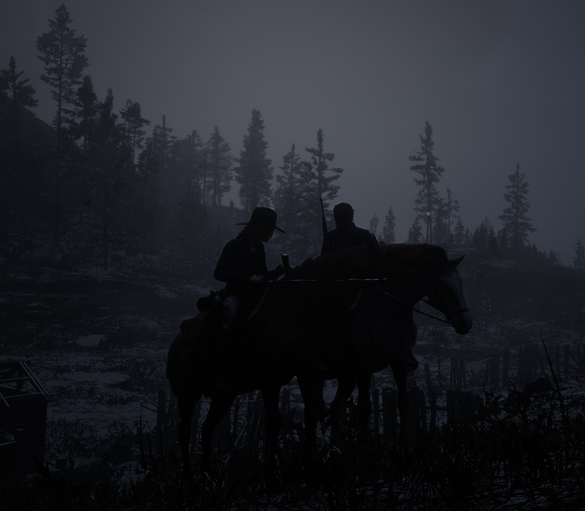
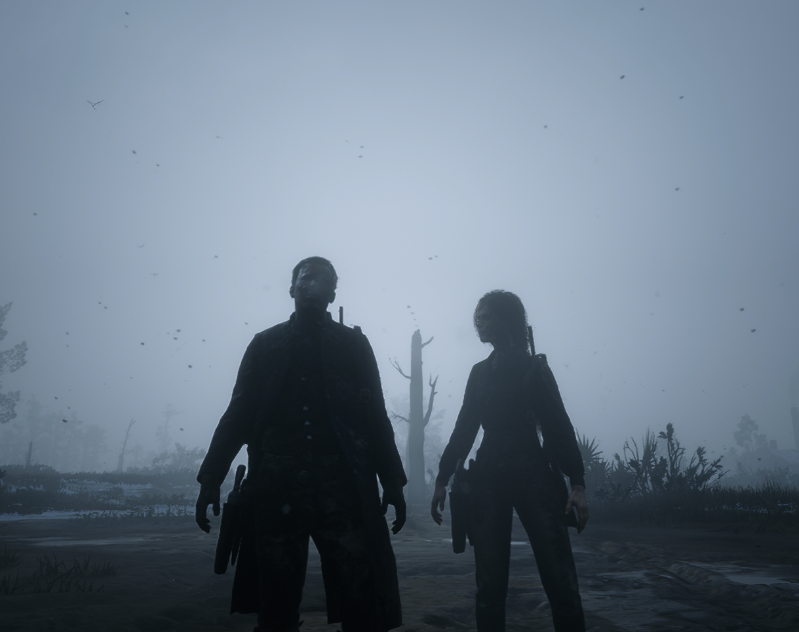
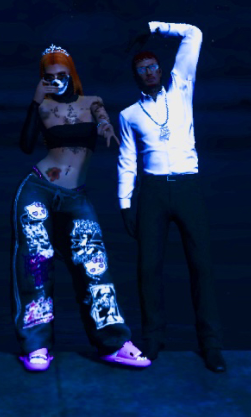

Eu simplesmente não sei o que eu faço, eu não sei se eu quem sou o errado da história, não sei se tem um errado na história. Porém, vim esclarecer alguns pontos que eu iria conversar com você por chamada, mas você ja nem me responde mais. Eu iria começar querendo entender o que eu eu fiz ou faço que te incomoda, eu não faço ideia do que possa ser, eu até tenho alguma ideia na real, mas acho que não deve ser isso. Por favor, esclareça as coisas comigo.
Por diante, agora vem o que eu iria falar. Pois bem, nois dois começamos a conversar frequentemente todos os dias e começamos a ficar cada vez mais próximos um do outro. Durante esse tempo, fui te conhecendo melhor, e você passou a ser pra min uma pessoa admirável, seu jeito, sua beleza encantadora e tudo que eu possa pensar, e bem, quando menos percebi, eu estava gostando de você, não foi algo que eu esperava, até porque nunca tive segundas inteções com você, e bem, quando percebi, tentei evitar, até porque você mora em SP, e porra, nunca fui desses de gostar de garotas que moram em outro Estado ou Cidade, mas enfim, foi algo muito natural, algo que eu não tive como controlar, algo que nem mesmo eu esperava.
Por certas vezes, eu sentia uma certa reciprocidade da tua parte, não sei se isso não passou apenas de uma ilusão, mas querendo ou não, foi algo que contribuiu para que esse sentimento se desenvolvesse ainda mais, e bem, não sei você ja gostou, gosta, está deixando de gostar ou então nunca gostou de min assim como gosto de você, porém eu fui burro em não ter deixado isso mais claro desde o início e esclarecer as coisas com você, isso evitaria muita coisa. Bem, estamos nessa situação agora, eu não sei o que vai acontecer daqui pra frente, se isso que eu falei vai estragar tudo ou sei la, mas eu prefiro muito mais ter uma certeza da sua parte do que ficar carregando essa angústia comigo, de não saber se existe uma reciprocidade.
Se você disser que não existe reciprocidade da sua parte, isso provavelmente estará sendo o final de nossa amizade, pois provavelmente pode ficar algo muito estranho, mas bem, tendo uma resposta positiva ou negativa sua, isso ja resolverá muita coisa. Por fim, independente de tudo, eu te amei muito, ja tinha anos que eu não gostava de alguém, eu literal namorei uma vez na minha vida e o restante da minha vida não gostei de mais niguém praticamente, o que fez eu ficar solteiro e nunca mais namorar alguém, até por isso acho que eu era bem malandrinho e saia ficando com várias, como uma forma de preencher um amor que nunca mais encontrei, mas dai vem você e tudo muda, eu comecei a gostar tanto de você, que viagaria muito fácil e gastaria o dinheiro que for so pra ver você, eu gosto tanto de você...
Por, Helder Neto
P.S. Independente do que aconteça, eu nunca esquecerei você ♡
Te dedico essa música: